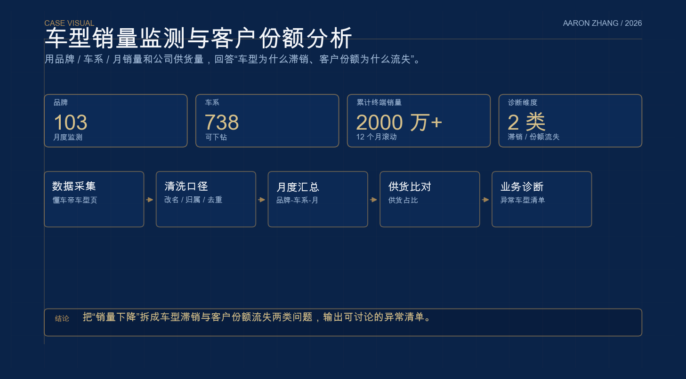

车型销量监测与客户份额分析
用 103 个品牌、738 个车系的月度终端销量，搭建一套能回答「车型为什么滞销、客户份额为什么流失」的监测体系。
| 公司 |
本特勒投资（中国）有限公司 |
| 时间 |
2026.07 – 至今 |
| 角色 |
供应链数字化实习生 · 搭建 / 维护 |
| 关键词 |
Python 数据清洗 Excel 指标体系 |
背景 / Context
公司需要同时看两件事：
- 市场端：整车厂客户的车卖得怎么样？哪些车型在增长，哪些在滞销？
- 供应端：公司实际供货量是多少？供货占比是否在变化？
原来的信息分散在外部平台和内部报表里，缺少一套按月更新、能按品牌 / 车系 / 月份下钻的监测口径，难以支撑客户关系维护和供应决策。
我的工作 / What I did
我编写了懂车帝车型销量爬取脚本，并搭建月度销量监测体系：
- 数据采集：抓取车型销量数据，覆盖 103 个品牌、738 个车系。
- 时间窗口：维护 12 个月滚动数据，累计终端销量超过 2000 万辆。
- 清洗汇总：按月统计终端销量，处理车型改名、车系归属、重复记录等口径问题。
- 交叉比对：把终端销量与公司实际供货量对齐，计算供货占比。
- 指标下钻：按品牌、车系、月份三个维度拆解，构建「车型滞销 vs 客户份额流失」诊断框架。
- 业务输出：把异常车型、份额变化整理成可讨论的清单，支撑客户关系维护与供应决策。
结果 / Impact
- 建立覆盖 103 个品牌、738 个车系、12 个月的月度监测体系。
- 累计覆盖终端销量 2000 万+。
- 把「销量下降」从一句模糊判断，拆成可验证的 车型滞销 / 客户份额流失 两类问题，并给出下钻维度。
关键数据 / Key Numbers
| 指标 |
数值 |
口径 |
| 覆盖品牌 |
103 个 |
懂车帝车型销量 |
| 覆盖车系 |
738 个 |
可下钻到车系/月 |
| 时间窗口 |
12 个月滚动 |
月度更新 |
| 累计终端销量 |
2000 万+ |
覆盖车型的累计口径 |
| 诊断维度 |
2 类 |
车型滞销 / 客户份额流失 |

图：从懂车帝采集、清洗口径、月度汇总、供货比对到业务诊断的链路。
结论 / Takeaways
- “销量下降”不是一个结论：要先区分是市场端车型整体滞销，还是供应端在客户中的份额下降，两者对应完全不同的动作。
- 口径比爬虫更难：车型改名、车系归属、重复记录、时间窗口，任何一个处理不一致都会让“份额变化”失真。
- 监测体系要能下钻：品牌 → 车系 → 月份三层结构，才能把异常定位到可以讨论的具体车型。
可迁移的能力 / What it shows
- 指标设计：从业务问题倒推指标，而不是堆报表。
- 数据口径治理：车型改名、车系归属、时间窗口等细节决定分析是否可信。
- 从数据到决策：不只输出数字，而是输出可以拿去讨论的异常清单和假设。
说明：该项目为实习期间内部项目。以上仅展示问题拆解、方法和个人贡献，不包含公司数据、系统截图或源代码；部分细节已做脱敏和概括处理。